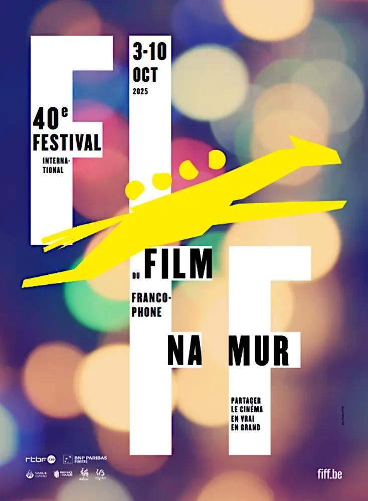
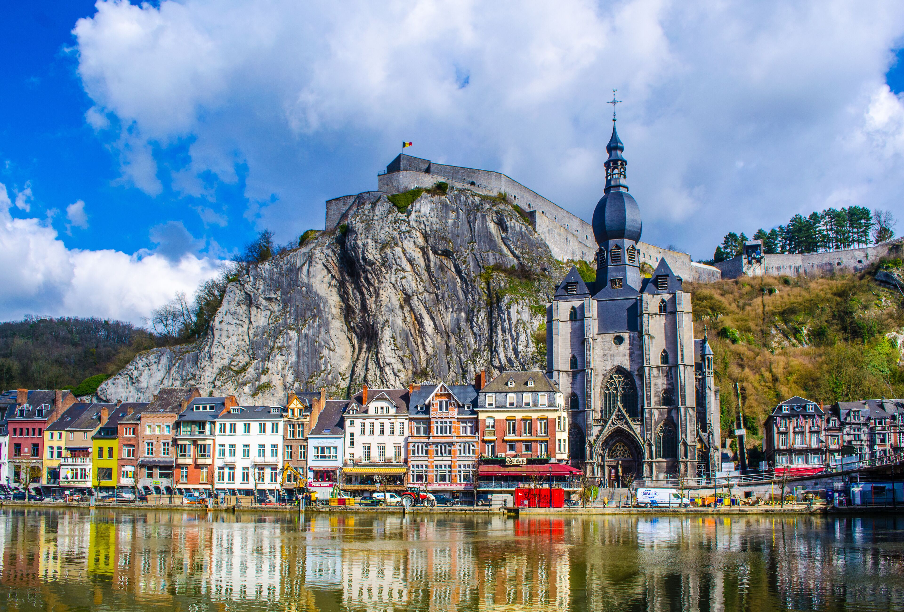
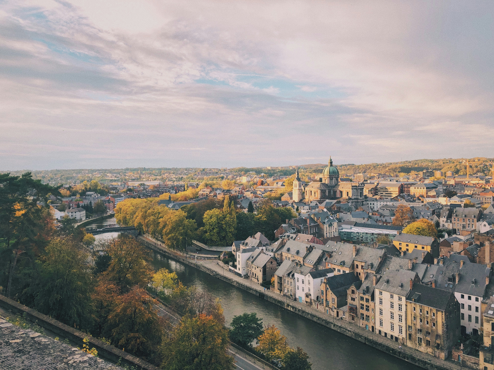
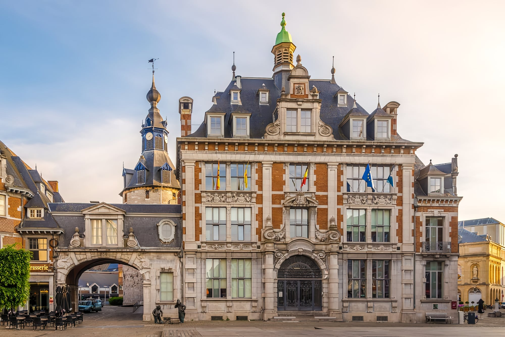
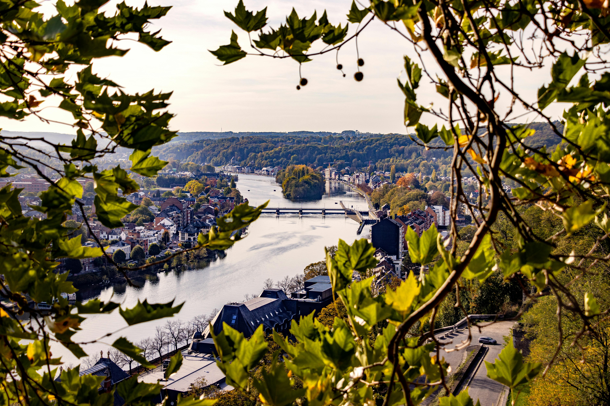
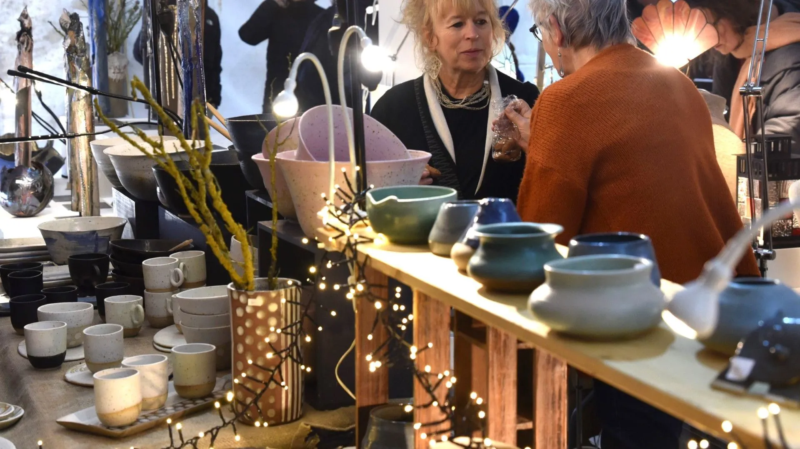
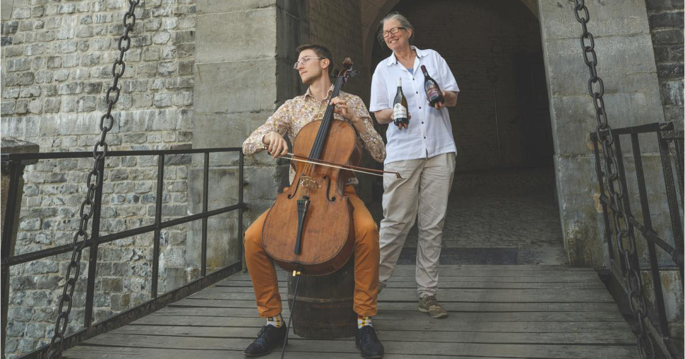
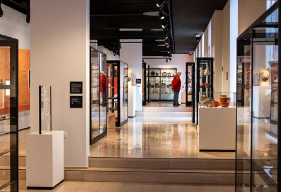

Festival du Film Francophone
Événement culturel majeur mettant à l’honneur le cinéma francophone à Namur.
Découvrir l’événementVille verte au cœur de la Wallonie, Namur allie patrimoine historique, dynamisme culturel et douceur de vivre entre Meuse et Sambre.

Domine la ville et témoigne d’un riche passé militaire et culturel. Aujourd’hui, elle accueille expositions, événements et promenades panoramiques.
Offre un cadre authentique avec ses ruelles pavées, ses façades anciennes et ses institutions culturelles.


Démarches simplifiées, accès aux documents officiels et accompagnement des citoyens.
Parcs, promenades et initiatives écologiques renforcent l’identité de Namur comme ville verte.


Événement culturel majeur mettant à l’honneur le cinéma francophone à Namur.
Découvrir l’événement
Rencontre avec les producteurs et artisans locaux dans le centre historique.
Voir les dates
Concerts en plein air dans un cadre patrimonial exceptionnel, au cœur de la nature.
Programme des concerts
Exposition artistique mettant en valeur le patrimoine et la création contemporaine.
Infos pratiques